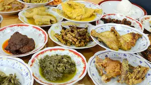
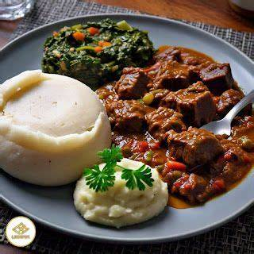
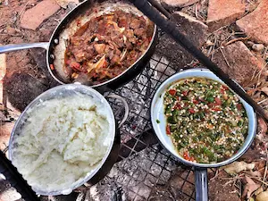

Understanding Zimbabwe's Culinary Traditions
Published on February 10, 2026

Zimbabwean cuisine is deeply rooted in the country's agricultural heritage and reflects the flavors
and techniques passed down through generations. From the staple sadza to rich meat stews, each dish
tells a story of Zimbabwe's culture and community.
Traditional Zimbabwean cooking emphasizes the use of locally grown vegetables, grains, and proteins.
The cuisine is not about complexity but about making the most of available ingredients and creating
hearty, nourishing meals that bring families together around the table.
Essential Ingredients in Zimbabwe Cooking
Published on February 5, 2026

Traditional Zimbabwean cooking relies on simple yet flavorful ingredients that have been staples for
generations. These essential components form the foundation of authentic Zimbabwe recipes:
- Maize Meal (Sadza) - The staple starch served with almost every meal
- Peanut Butter - Used in relishes and stews for richness and protein
- Dried Vegetables - Preserved seasonal vegetables for year-round cooking
- Fresh Onions and Tomatoes - Base for many traditional relishes
- Chili Peppers - Added for heat and flavor depth
Mastering the use of these ingredients is key to creating authentic Zimbabwe dishes that capture the
essence of traditional cooking.
Traditional Cooking Techniques in Zimbabwe
Published on January 28, 2026

Zimbabwe's traditional cooking methods have been refined over centuries and are designed to bring out
the best in local ingredients while making efficient use of heat and resources:
- Slow Stewing - Low and slow cooking in cast iron pots for tender, flavorful
meats
- Open Fire Grilling - Traditional method for cooking meat and developing smoky
flavors
- Boiling and Steaming - Used for preparing vegetables and grains
- Drying and Preservation - Ancient technique for preserving fish and vegetables
- Roasting - Direct heat cooking for developing complex flavors
These time-honored techniques remain essential to authentic Zimbabwe cooking and continue to deliver
delicious, satisfying meals.